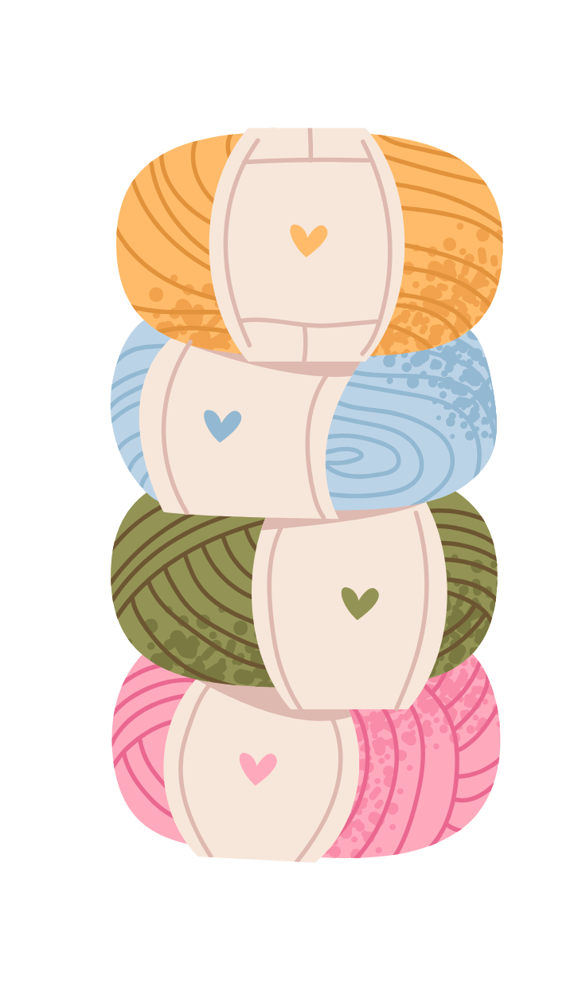
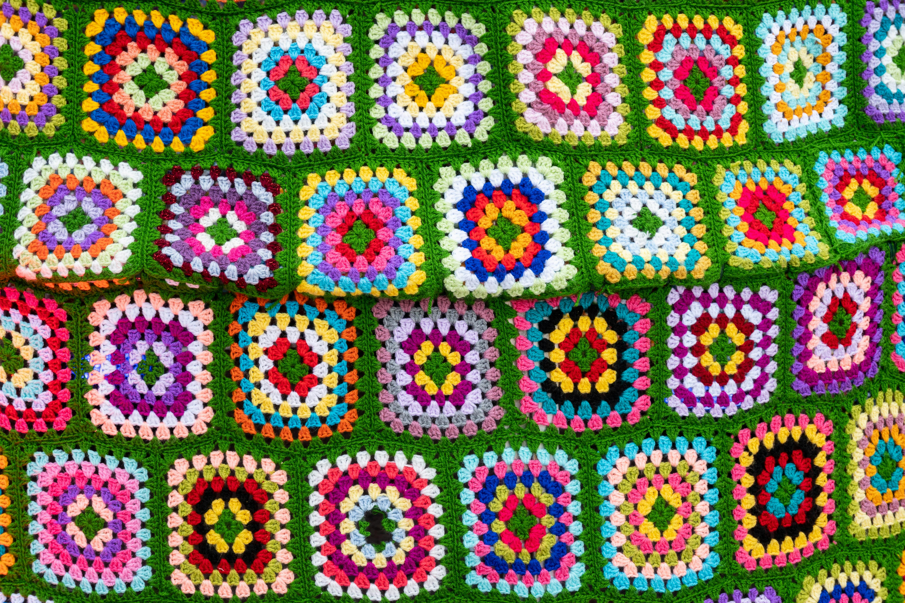
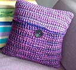
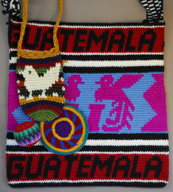
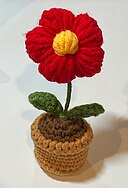
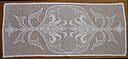

Crocheted Chatter
Styles
Crochet is a very versatile fiber art. There are many styles in crochet that use various techniques.
Styles
| (Name) | (Description) | (Image) |
|---|---|---|
| Granny Square | Square fabric produced by crocheting in the round from the center |  |
| Tunisian Crochet | Uses elongated crochet hook and is considered to be a mixture of crochet and knitting |  |
| Tapestry Crochet | Colorwork that involves switching the yarn back and forth to create images |  |
| Amigurumi | Japanese art of crocheting stuffed toys |  |
| Filet Crochet | Combination of open and closed mesh stiches to form a image |  |
Image Credits
(1) Photo by Bingqian Li: on Pexels
(2) Aine D, "Tunisian crochet pillow" , 2 February 2008, Via Wikimedia Commons. Licenses - Creative Commons Attribution-Share Alike 4.0 International
{kind=link}
(3) ArtProf, "Photo of tapestry crochet pieces made for tourists in Guatemala" , 25 February 2012, Via Wikimedia Commons. Licenses - Creative Commons Attribution-Share Alike 4.0 International
{kind=link}
(4) Little green Froggy, "A red amigurumi flower inside a brown amigurumi pot" , 6 January 2024, Via Wikimedia Commons. Licenses - Creative Commons Attribution-Share Alike 4.0 International
{kind=link}
(5) Cgoodwin, "Filet Crochet table runner" , 5 December 2007, Via Wikimedia Commons. Licenses - Creative Commons Attribution-Share Alike 4.0 International
{kind=link}
Sustainability
One fact about crochet, that people may not be aware of, is that crocheted items can only be handmade. A machine cannot replicate the hand motions that are required for crochet. Knitting on the other hand can be either handmade or machine made. Since it is handmade it adheres to ethical production because of the slow production time. Unlike items of the fast fashion industry, that are made by machines in mass production. Crochet is often used to upcycle clothing. Also it's versatility leads to the creation of many unique designs. Many brands have increased production on natural fibers like organic cotton, wool, and recycled yarns to improve sustainability.
Activism
Many people, and groups, crochet items and donate them to hospitals, homeless shelters, and nursing homes. Organizations, that use crochet as a means to help others, are Knots of Love, Crochet for Cancer, and Soldiers' Angels. Efforts have been made to help wildlife as well. After an Australian bushfire in 2020, individuals crocheted kangaroo pouches, koala mittens, and wildlife nests. The Crochet Coral Reef Project, created crocheted versions of coral reefs, to promote awareness of global warming effects.